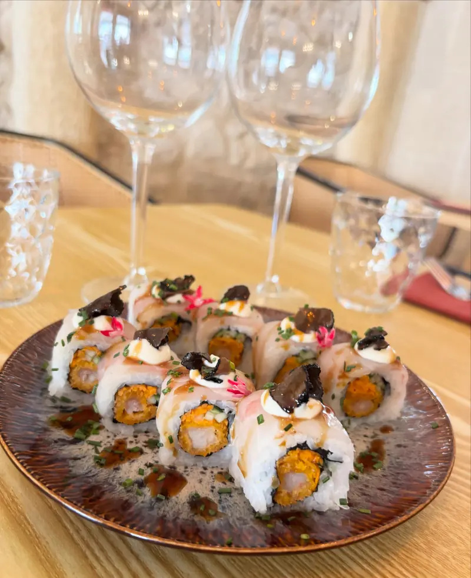
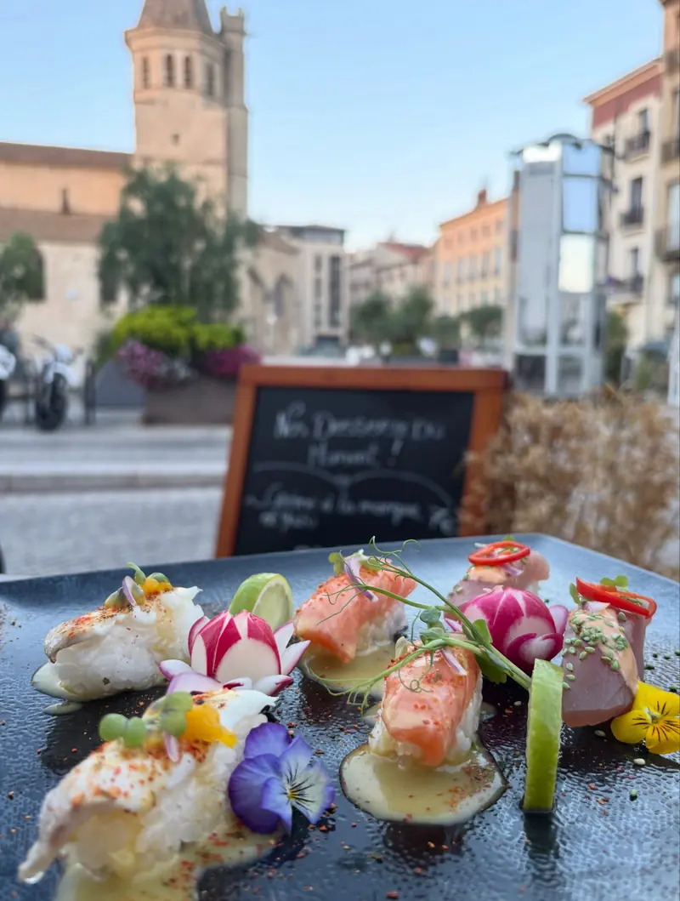
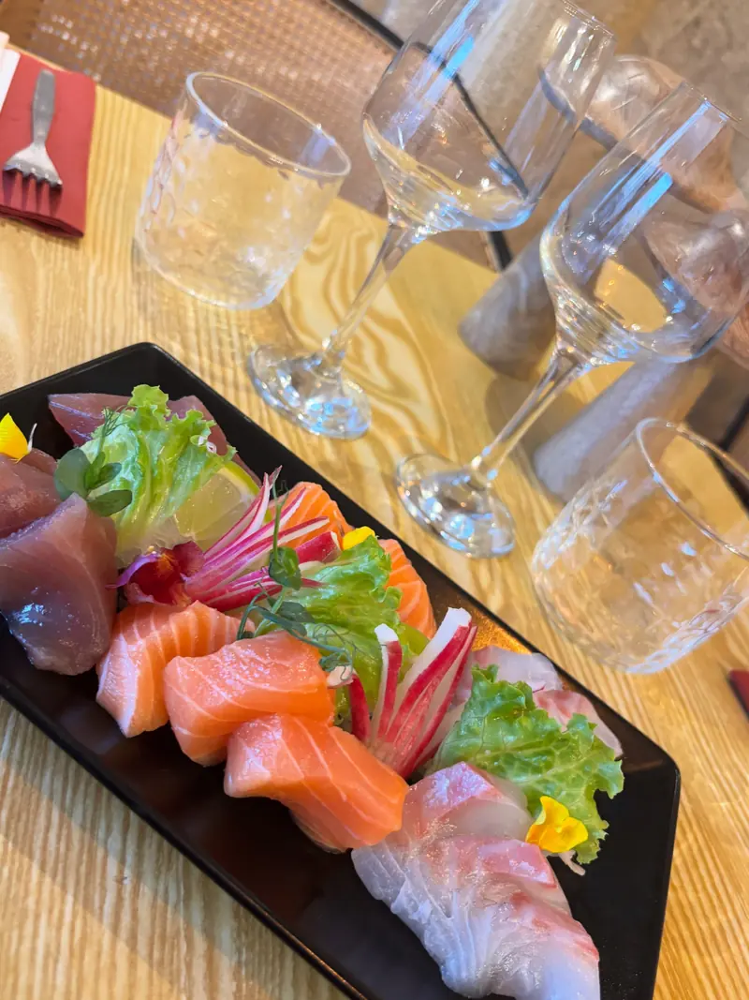
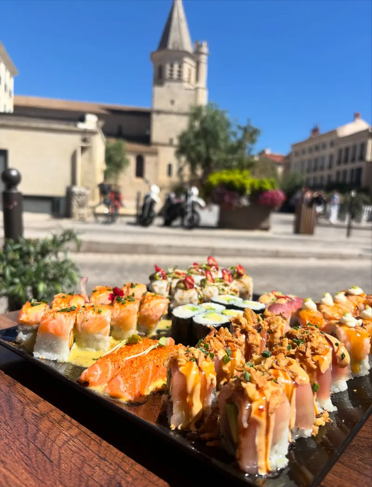

Nikkie Truffe
8 piècesEbi fry, daurade, concombre, carotte, carpaccio de truffe d’été, mayonnaise, ciboulette
16 €
Livraison · Béziers
Nos sushis, ceviches et nikkei rolls, préparés à la minute place de la Madeleine et livrés chez vous. Commande et paiement en ligne, à l’heure que vous choisissez.
12h – 14h30 · 18h45 – 22h · fermé le mercredi

Comment ça marche
Nos signatures

Ebi fry, daurade, concombre, carotte, carpaccio de truffe d’été, mayonnaise, ciboulette

Saumon, thon, daurade

6 maki avocat cheese, 8 Nikkie Pink, 8 Samba Exotic, 8 Samba Tuna Peruano, 8 Samba Rocoto, 2 sushi saumon nikkei, 2 sushi thon nikkei
À Béziers (34500). Pour une adresse en dehors, appelez-nous : selon l’heure et la distance, on trouve souvent une solution.
Oui, 20 € pour la livraison. Il n’y a pas de minimum pour une commande à emporter.
Nous préparons tout à la minute. Comptez environ 45 minutes en livraison, 20 minutes à emporter, un peu plus le vendredi et le samedi soir. Vous pouvez aussi choisir votre heure.
Oui. Même quand le restaurant est fermé, vous pouvez commander pour le prochain service et choisir l’heure qui vous arrange.
En ligne, par carte bancaire, au moment de commander. Le livreur n’a rien à encaisser.
Commandez en ligne en deux minutes : livré à Béziers ou prêt à emporter, à l’heure que vous choisissez.